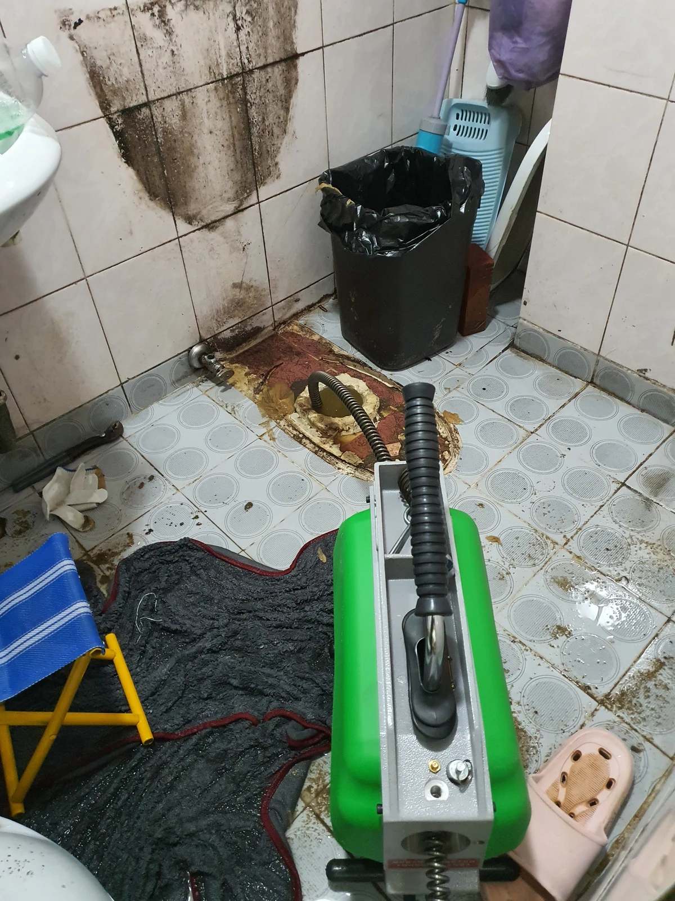
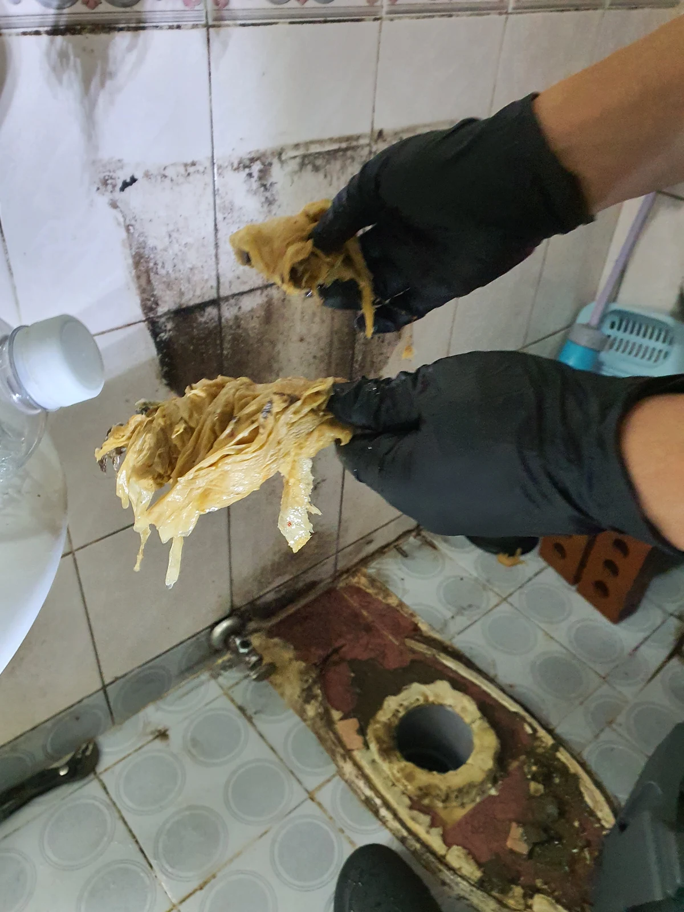

송파구 석촌동, 변기막힘비용 현장과 확인한 원인
송파구 석촌동 변기막힘 비용을 상담할 때는 실제로 필요한 작업 범위를 먼저 확인해야 합니다. 접근 위치와 사용 장비, 제거 과정, 마지막 점검에 따라 안내할 항목이 달라지므로 이번 현장에 포함된 작업을 순서대로 살펴봅니다.
서울 송파구 석촌동 1층에서 변기를 탈거하고 오수관을 작업한 변기막힘 사례입니다. 신라건축설비는 샤프트와 스프링 구동기를 함께 사용해 비닐과 물티슈를 제거했습니다. 실내 작업에 이어 외부 정화조 출수관에서도 내시경으로 점검하고 통수 확인까지 진행했습니다.
이번 변기막힘 현장은 변기에서 연결된 오수관에 접근한 작업이라는 점이 중요합니다. 변기에서 배수 불편이 나타나더라도 실제 작업 위치가 연결 배관인 경우에는 그 구간에 맞는 접근이 필요합니다. 사용 층수가 1층이라는 사실과 오수관에서 비닐·물티슈를 꺼낸 사실을 함께 기록하되, 층수만으로 원인을 판단하지는 않습니다.
1단계: 변기 탈거 후 샤프트·스프링 작업
먼저 변기를 탈거해 바닥의 오수관 입구를 드러냈습니다. 작업 사진에는 분리한 변기와 배관 입구, 장비를 투입한 모습이 남아 있습니다. 이 현장에서 탈거는 오수관 작업을 위한 통로를 확보하는 과정이었습니다. 변기 안쪽만을 작업한 사례와 접근 위치가 다르므로, 상담할 때도 변기와 연결 배관 중 어디를 확인하는지 구분하면 이해하기 쉽습니다.
석촌동 변기막힘 작업에는 샤프트와 스프링 구동기를 함께 사용했습니다. 샤프트를 배관 안으로 넣어 작업하는 사진과 구동기에 연결된 스프링이 오수관으로 들어가는 사진에서 사용 장비를 확인할 수 있습니다. 하나의 장비 이름으로 전체 작업을 설명하기보다 실제 접근 위치와 제거 대상까지 연결해 보는 것이 좋습니다.
배관에서 꺼낸 물질은 비닐과 물티슈였습니다. 여러 겹으로 뭉친 물질을 외부로 회수한 모습이 제거 사진에 보입니다. 이번 변기막힘 작업은 물길에 영향을 준 이물질을 꺼내는 과정이 포함됐습니다. 비닐과 물티슈는 변기에 버리지 않고 별도로 처리해야 하며, 물과 함께 내려갔다고 해서 배관 밖까지 문제없이 이동했다고 판단할 수는 없습니다.

2단계: 외부 정화조 출수관 점검과 통수 확인
실내 오수관 작업에 이어 외부 정화조 출수관에서도 내시경 점검을 진행했습니다. 내부를 직접 볼 수 없는 배관은 바깥 모습만으로 상태를 판단하기 어렵기 때문에, 내시경으로 살펴보는 단계와 장비를 투입해 처리하는 단계를 구분해 설명할 필요가 있습니다. 이번 변기막힘 현장은 실내 접근에 더해 외부 구간 점검을 포함했습니다.
샤프트와 스프링 구동기는 오수관 작업에 사용했고, 내시경은 외부 출수관 점검에 사용했습니다. 서로 다른 위치에서 어떤 장비를 썼는지를 정리하면 현장의 작업 범위가 명확해집니다. 사진에서 드러난 주변 오염이나 설비 외관만으로 배관 파손 또는 구조 문제까지 단정할 수는 없으며, 이 사례에서 확인한 제거 물질은 비닐과 물티슈입니다.
마지막에는 통수 상태를 확인했습니다. 변기막힘 작업에서 이물질을 꺼낸 사실과 물 흐름을 확인한 사실은 각각 중요한 완료 근거입니다. 회수한 물질만 보여주는 데서 끝나지 않고 실제 배수가 이루어지는지 살피는 과정까지 진행했습니다. 외부 정화조 출수관 내시경 점검과 통수 확인이 포함됐다는 점이 석촌동 현장의 특징입니다.

작업 결과와 재발 방지·상담 안내
송파구 석촌동 변기막힘 현장은 1층 변기 탈거 후 오수관 작업으로 비닐과 물티슈를 제거하고, 외부 점검과 통수 확인까지 마쳤습니다. 비닐과 물티슈는 사용 후 별도 쓰레기통에 버려주세요. 다른 물질과 함께 배관에 남지 않도록 변기에 넣지 않는 사용 습관이 재발 방지의 기본입니다.
변기가 막혔을 때에는 반복해서 물을 내리기보다 사용을 멈추고 어느 설비에서 문제가 나타나는지 살펴보는 것이 좋습니다. 변기 뚫는 업체에 문의할 때는 석촌동이라는 위치와 1층 사용 여부, 알고 있는 이물질, 이미 시도한 조치를 전달해주세요. 변기막힘 증상이 다시 나타나면 이전 작업 내용을 함께 설명해 점검 범위를 상담할 수 있습니다.
특히 연결 오수관을 작업하는 경우에는 실내 작업과 외부 점검이 각각 어디까지 포함되는지 설명을 듣는 것이 좋습니다. 장비 종류만 묻기보다 접근 위치, 제거할 대상, 작업 후 확인 방법을 함께 살펴보세요. 사진과 증상 설명은 상담에 도움이 되지만 배관 내부 상태 전체를 대신하지 않으므로 현장 확인에 따라 필요한 범위를 안내받는 것이 중요합니다.
변기막힘 견적은 방문·점검과 실제 제거 작업이 어디까지 포함되는지 확인해주세요. 추가 작업의 설명 절차, 탈거 후 복구 범위, 부가세 포함 여부도 같은 조건으로 비교하는 것이 좋습니다. 이 사례의 작업 내용을 다른 현장의 확정 금액으로 적용하지는 않습니다.
최종 조치: 변기 탈거 후 샤프트·스프링 구동기로 비닐과 물티슈를 제거하고 외부 정화조 출수관 내시경 점검 및 통수 확인을 마쳤습니다.
현장 방문 전 확인하는 비용과 작업 범위
신라건축설비는 현장 증상과 배관 구조를 확인한 뒤 필요한 작업과 예상 비용을 안내합니다. 단순 관통으로 해결되는지, 배관내시경·석션·고압세척 또는 변기 탈거가 필요한지는 현장 상태에 따라 달라집니다. 출장비와 야간 작업비, 추가 장비 비용이 발생할 수 있는 경우 작업 전에 먼저 설명하고 동의를 받은 범위에서 진행합니다.
업체를 선택할 때 확인할 사항
무조건적인 ‘0원’ 표현보다 실제 작업 범위, 추가 비용 조건, 사용 장비와 사후 대응 기준을 확인하는 것이 중요합니다. 해결되지 않았을 때의 비용 기준과 작업 후 동일 증상 발생 시 점검 범위를 사전에 문의해두면 불필요한 분쟁을 줄일 수 있습니다.
송파구 변기막힘 자주 묻는 질문
변기막힘은 왜 반복되나요?
송파구 석촌동 현장처럼 1층 변기 배수 문제로 연결 오수관 작업 필요 증상은 원인이 현장마다 다를 수 있습니다. 변기 내부 이물질뿐 아니라 하부 오수관 막힘이나 배관 상태 때문에 반복될 수 있습니다. 같은 변기막힘이 재발하면 막힌 위치와 원인을 다시 확인하는 것이 중요합니다.
변기 물이 안 내려가거나 역류하면 변기뚫는업체를 불러야 하나요?
물이 천천히 내려가거나 수위가 차오르고 변기역류가 반복되면 단순 뚫어뻥보다 전문 장비 점검이 필요한 경우가 있습니다. 현장에서는 증상과 배관 구조를 먼저 확인합니다.
변기 이물질 막힘은 변기를 탈거해야 하나요?
물티슈·청소포·플라스틱·음식물처럼 변기 트랩에 걸린 이물질은 위치에 따라 변기 탈거가 필요할 수 있습니다. 무조건 탈거하지 않고 먼저 막힘 위치를 판단합니다.
변기뚫는업체는 어떤 장비로 작업하나요?
현장 상태에 따라 석션, 에어건, 배관내시경, 변기 탈거 등을 사용합니다. 하부 오수관 문제라면 변기만 뚫는 작업보다 배관 구간 확인이 중요합니다.
변기막힘 비용은 어떻게 정해지나요?
단순 관통인지, 이물질 제거와 변기 탈거가 필요한지, 오수관이나 공용배관 작업이 필요한지에 따라 달라집니다. 추가 장비나 작업이 필요하면 진행 전에 범위와 비용을 안내합니다.
변기에서 냄새가 나거나 물이 자주 차오르는 것도 막힘과 관련 있나요?
악취나 수위 이상이 항상 막힘 때문인 것은 아니지만 배수 불량, 오수관 상태, 연결부 문제와 함께 나타날 수 있습니다. 반복되면 현장 점검으로 원인을 구분해야 합니다.
변기막힘 서울·경기 출동지역
신라건축설비는 송파구 석촌동 현장을 포함해 서울 25개 구와 경기도 31개 시·군의 배관 문제를 상담합니다. 현장 거리와 기사 배정 상황에 따라 출동 가능 여부를 먼저 안내드립니다.
서울 전 지역
강남구 · 강동구 · 강북구 · 강서구 · 관악구 · 광진구 · 구로구 · 금천구 · 노원구 · 도봉구 · 동대문구 · 동작구 · 마포구 · 서대문구 · 서초구 · 성동구 · 성북구 · 송파구 · 양천구 · 영등포구 · 용산구 · 은평구 · 종로구 · 중구 · 중랑구
경기도 주요 출동지역
수원시 · 용인시 · 고양시 · 화성시 · 성남시 · 부천시 · 남양주시 · 안산시 · 평택시 · 안양시 · 시흥시 · 파주시 · 김포시 · 의정부시 · 광주시 · 하남시 · 광명시 · 군포시 · 양주시 · 오산시 · 이천시 · 안성시 · 구리시 · 의왕시 · 포천시 · 양평군 · 여주시 · 동두천시 · 과천시 · 가평군 · 연천군